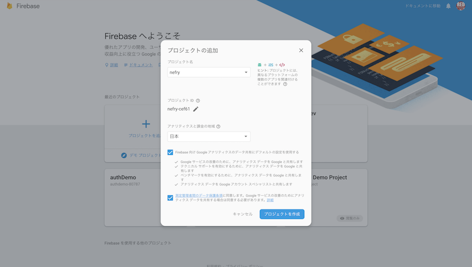
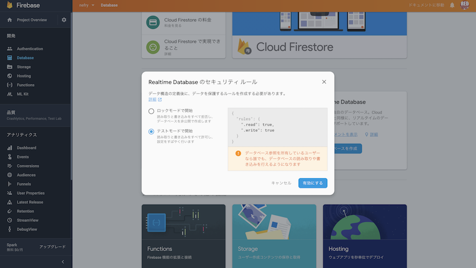
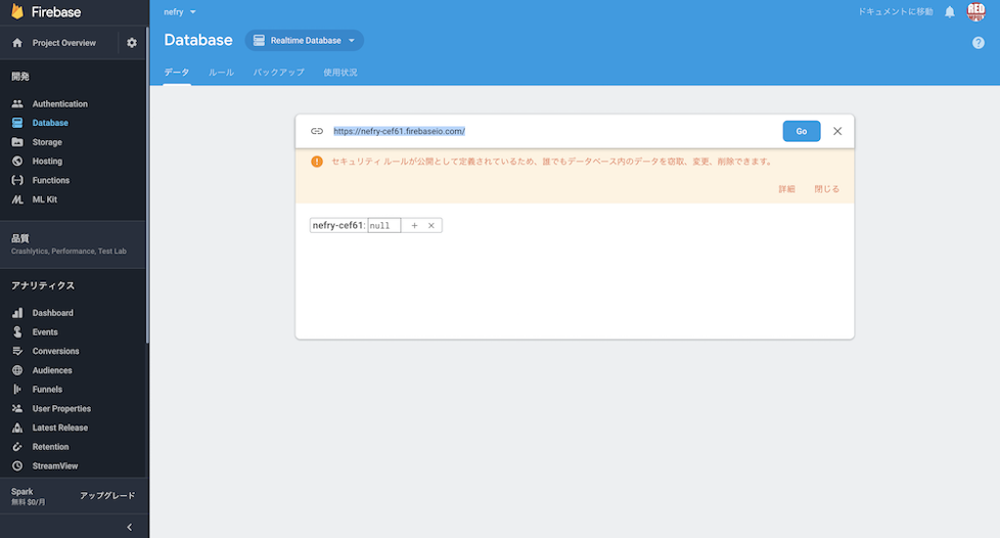
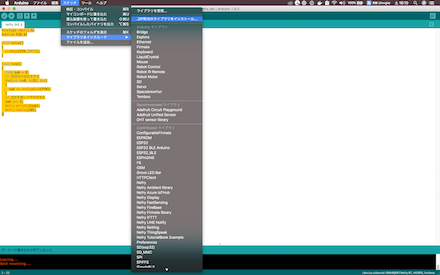

<!DOCTYPE html>
<html>
<head>
<title>index.md</title>
<meta http-equiv="Content-type" content="text/html;charset=UTF-8">

<style>
/*---------------------------------------------------------------------------------------------
 *  Copyright (c) Microsoft Corporation. All rights reserved.
 *  Licensed under the MIT License. See License.txt in the project root for license information.
 *--------------------------------------------------------------------------------------------*/

body {
	font-family: "Segoe WPC", "Segoe UI", "SFUIText-Light", "HelveticaNeue-Light", sans-serif, "Droid Sans Fallback";
	font-size: 14px;
	padding: 0 12px;
	line-height: 22px;
	word-wrap: break-word;
}

#code-csp-warning {
	position: fixed;
	top: 0;
	right: 0;
	color: white;
	margin: 16px;
	text-align: center;
	font-size: 12px;
	font-family: sans-serif;
	background-color:#444444;
	cursor: pointer;
	padding: 6px;
	box-shadow: 1px 1px 1px rgba(0,0,0,.25);
}

#code-csp-warning:hover {
	text-decoration: none;
	background-color:#007acc;
	box-shadow: 2px 2px 2px rgba(0,0,0,.25);
}


body.scrollBeyondLastLine {
	margin-bottom: calc(100vh - 22px);
}

body.showEditorSelection .code-line {
	position: relative;
}

body.showEditorSelection .code-active-line:before,
body.showEditorSelection .code-line:hover:before {
	content: "";
	display: block;
	position: absolute;
	top: 0;
	left: -12px;
	height: 100%;
}

body.showEditorSelection li.code-active-line:before,
body.showEditorSelection li.code-line:hover:before {
	left: -30px;
}

.vscode-light.showEditorSelection .code-active-line:before {
	border-left: 3px solid rgba(0, 0, 0, 0.15);
}

.vscode-light.showEditorSelection .code-line:hover:before {
	border-left: 3px solid rgba(0, 0, 0, 0.40);
}

.vscode-dark.showEditorSelection .code-active-line:before {
	border-left: 3px solid rgba(255, 255, 255, 0.4);
}

.vscode-dark.showEditorSelection .code-line:hover:before {
	border-left: 3px solid rgba(255, 255, 255, 0.60);
}

.vscode-high-contrast.showEditorSelection .code-active-line:before {
	border-left: 3px solid rgba(255, 160, 0, 0.7);
}

.vscode-high-contrast.showEditorSelection .code-line:hover:before {
	border-left: 3px solid rgba(255, 160, 0, 1);
}

img {
	max-width: 100%;
	max-height: 100%;
}

a {
	color: #4080D0;
	text-decoration: none;
}

a:focus,
input:focus,
select:focus,
textarea:focus {
	outline: 1px solid -webkit-focus-ring-color;
	outline-offset: -1px;
}

hr {
	border: 0;
	height: 2px;
	border-bottom: 2px solid;
}

h1 {
	padding-bottom: 0.3em;
	line-height: 1.2;
	border-bottom-width: 1px;
	border-bottom-style: solid;
}

h1, h2, h3 {
	font-weight: normal;
}

h1 code,
h2 code,
h3 code,
h4 code,
h5 code,
h6 code {
	font-size: inherit;
	line-height: auto;
}

a:hover {
	color: #4080D0;
	text-decoration: underline;
}

table {
	border-collapse: collapse;
}

table > thead > tr > th {
	text-align: left;
	border-bottom: 1px solid;
}

table > thead > tr > th,
table > thead > tr > td,
table > tbody > tr > th,
table > tbody > tr > td {
	padding: 5px 10px;
}

table > tbody > tr + tr > td {
	border-top: 1px solid;
}

blockquote {
	margin: 0 7px 0 5px;
	padding: 0 16px 0 10px;
	border-left: 5px solid;
}

code {
	font-family: Menlo, Monaco, Consolas, "Droid Sans Mono", "Courier New", monospace, "Droid Sans Fallback";
	font-size: 14px;
	line-height: 19px;
}

body.wordWrap pre {
	white-space: pre-wrap;
}

.mac code {
	font-size: 12px;
	line-height: 18px;
}

pre:not(.hljs),
pre.hljs code > div {
	padding: 16px;
	border-radius: 3px;
	overflow: auto;
}

/** Theming */

.vscode-light,
.vscode-light pre code {
	color: rgb(30, 30, 30);
}

.vscode-dark,
.vscode-dark pre code {
	color: #DDD;
}

.vscode-high-contrast,
.vscode-high-contrast pre code {
	color: white;
}

.vscode-light code {
	color: #A31515;
}

.vscode-dark code {
	color: #D7BA7D;
}

.vscode-light pre:not(.hljs),
.vscode-light code > div {
	background-color: rgba(220, 220, 220, 0.4);
}

.vscode-dark pre:not(.hljs),
.vscode-dark code > div {
	background-color: rgba(10, 10, 10, 0.4);
}

.vscode-high-contrast pre:not(.hljs),
.vscode-high-contrast code > div {
	background-color: rgb(0, 0, 0);
}

.vscode-high-contrast h1 {
	border-color: rgb(0, 0, 0);
}

.vscode-light table > thead > tr > th {
	border-color: rgba(0, 0, 0, 0.69);
}

.vscode-dark table > thead > tr > th {
	border-color: rgba(255, 255, 255, 0.69);
}

.vscode-light h1,
.vscode-light hr,
.vscode-light table > tbody > tr + tr > td {
	border-color: rgba(0, 0, 0, 0.18);
}

.vscode-dark h1,
.vscode-dark hr,
.vscode-dark table > tbody > tr + tr > td {
	border-color: rgba(255, 255, 255, 0.18);
}

.vscode-light blockquote,
.vscode-dark blockquote {
	background: rgba(127, 127, 127, 0.1);
	border-color: rgba(0, 122, 204, 0.5);
}

.vscode-high-contrast blockquote {
	background: transparent;
	border-color: #fff;
}
</style>

<style>
/* Tomorrow Theme */
/* http://jmblog.github.com/color-themes-for-google-code-highlightjs */
/* Original theme - https://github.com/chriskempson/tomorrow-theme */

/* Tomorrow Comment */
.hljs-comment,
.hljs-quote {
	color: #8e908c;
}

/* Tomorrow Red */
.hljs-variable,
.hljs-template-variable,
.hljs-tag,
.hljs-name,
.hljs-selector-id,
.hljs-selector-class,
.hljs-regexp,
.hljs-deletion {
	color: #c82829;
}

/* Tomorrow Orange */
.hljs-number,
.hljs-built_in,
.hljs-builtin-name,
.hljs-literal,
.hljs-type,
.hljs-params,
.hljs-meta,
.hljs-link {
	color: #f5871f;
}

/* Tomorrow Yellow */
.hljs-attribute {
	color: #eab700;
}

/* Tomorrow Green */
.hljs-string,
.hljs-symbol,
.hljs-bullet,
.hljs-addition {
	color: #718c00;
}

/* Tomorrow Blue */
.hljs-title,
.hljs-section {
	color: #4271ae;
}

/* Tomorrow Purple */
.hljs-keyword,
.hljs-selector-tag {
	color: #8959a8;
}

.hljs {
	display: block;
	overflow-x: auto;
	color: #4d4d4c;
	padding: 0.5em;
}

.hljs-emphasis {
	font-style: italic;
}

.hljs-strong {
	font-weight: bold;
}
</style>

<style>
/*
 * Markdown PDF CSS
 */

 body {
	font-family:  "Meiryo", "Segoe WPC", "Segoe UI", "SFUIText-Light", "HelveticaNeue-Light", sans-serif, "Droid Sans Fallback";
}

pre {
	background-color: #f8f8f8;
	border: 1px solid #cccccc;
	border-radius: 3px;
	overflow-x: auto;
	white-space: pre-wrap;
	overflow-wrap: break-word;
}

pre:not(.hljs) {
	padding: 23px;
	line-height: 19px;
}

blockquote {
	background: rgba(127, 127, 127, 0.1);
	border-color: rgba(0, 122, 204, 0.5);
}

.emoji {
	height: 1.4em;
}

/* for inline code */
:not(pre):not(.hljs) > code {
	color: #C9AE75; /* Change the old color so it seems less like an error */
	font-size: inherit;
}

/* Page Break : use <div class="page"/> to insert page break
-------------------------------------------------------- */
.page {
	page-break-after: always;
}

</style>

</head>
<body>
<h1 id="iot%E5%8B%89%E5%BC%B7%E4%BC%9A%E8%B3%87%E6%96%99">IoT勉強会資料</h1>
<h2 id="nefry%E3%81%A8ifttt%E3%81%A7%E3%83%8E%E3%83%B3%E3%83%97%E3%83%AD%E3%82%B0%E3%83%A9%E3%83%A0%E3%81%A7tweet%E3%82%92%E8%A1%8C%E3%81%86">NefryとIFTTTでノンプログラムでtweetを行う</h2>
<p>https://dotstud.io/docs/nefrybt-ifttt/</p>
<hr>
<h2 id="l%E3%83%81%E3%82%AB">Lチカ</h2>
<p>ここではNefry BTに対してプログラムを書きこむ方法を学ぶ<br>
https://dotstud.io/docs/nefrybt-led/</p>
<h3 id="%E3%81%86%E3%81%BE%E3%81%8F%E3%83%97%E3%83%AD%E3%82%B0%E3%83%A9%E3%83%A0%E3%81%8C%E6%9B%B8%E3%81%8D%E8%BE%BC%E3%82%81%E3%81%AA%E3%81%84%E5%A0%B4%E5%90%88%E3%81%AF">うまくプログラムが書き込めない場合は</h3>
<p>設定を以下のように変えてみよう</p>
<blockquote>
<p>ツール &gt;　Upload Speed : 460800<br>
ツール &gt; ボード: Nefry BT</p>
</blockquote>
<hr>
<h2 id="%E3%82%BB%E3%83%B3%E3%82%B5%E3%81%AB%E3%82%88%E3%82%8B%E3%83%87%E3%83%BC%E3%82%BF%E3%81%AE%E5%8F%96%E5%BE%97">センサによるデータの取得</h2>
<p>ここからはNefryに外部のセンサーを取り付けてセンサの値を取得する方法を学ぶ。</p>
<hr>
<h1 id="%E5%85%89%E3%82%BB%E3%83%B3%E3%82%B5%E3%81%AE%E5%80%A4%E3%82%92firebase%E3%81%AB%E9%80%81%E4%BF%A1%E3%81%97%E3%81%A6%E8%A8%98%E9%8C%B2%E3%81%99%E3%82%8B">光センサの値をfirebaseに送信して記録する</h1>
<h2 id="%E5%85%89%E3%82%BB%E3%83%B3%E3%82%B5%E3%81%AE%E5%80%A4%E3%82%92%E7%A2%BA%E8%AA%8D%E3%81%99%E3%82%8B">光センサの値を確認する</h2>
<p>Nefry BTのA2と書かれたソケットに光センサを接続する。<br>
Arduino IDEから以下のプログラムを書き込んで実行する</p>
<pre class="hljs"><code><div>#include &lt;Nefry.h&gt;
#define PIN A2

void setup()
{
  pinMode(PIN,INPUT);
}

void loop()
{
  long sum = 0;
  // 32回分の合計をする
  for(int i=0; i&lt;32; i++)
  {
    sum += analogRead(PIN);
  }
  // 合計を割って平均を取る
  sum &gt;&gt;= 5;
  Nefry.println(sum);
  Nefry.ndelay(10);
}

</div></code></pre>
<p><strong>ツール &gt; シリアルモニタ</strong> からシリアルモニタを開くと値を確認することができる<br>
<strong>ツール &gt; シリアルプロット</strong> を選択するとグラフで確認することができる<br>
115200bpsで確認<br>
<em>同時に二つ開くことはできないので注意</em></p>
<hr>
<h2 id="firebase%08%E3%81%B8%E3%81%AE%E8%A8%98%E9%8C%B2">Firebaseへの記録</h2>
<p>プロジェクトの作成</p>
<p></p>
<hr>
<p> 左の「Database」を選択して「Realtime Database」を選択</p>
<p></p>
<hr>
<p>テストモードを選択</p>
<p></p>
<hr>
<p>databaseのURLをメモ</p>
<p></p>
<hr>
<p>Nefryに以下のコードを書き込む<br>
FIREBASE_HOSTの部分はメモしたものを記述(https://は抜いて)<br>
値がリアルタイムで更新されるのが確認できる</p>
<pre class="hljs"><code><div>#define FIREBASE_HOST &quot;xxxx.firebaseio.com&quot;

NefryFireBase firebase;
void setup()
{
  pinMode(PIN,INPUT);
  firebase.begin(FIREBASE_HOST);
}

void loop()
{
  DataElement elem = DataElement();
  elem.setValue(&quot;sensor&quot;, analogRead(PIN));
  firebase.write(&quot;Nefry&quot;, &amp;elem);//FireBaseのデータを書き込みます
  Nefry.ndelay(1000);
}
</div></code></pre>
<h2 id="web%E3%83%9A%E3%83%BC%E3%82%B8%E3%82%92%E4%BD%9C%E3%81%A3%E3%81%A6%E5%80%A4%E3%82%92%E5%8F%96%E5%BE%97%E3%81%99%E3%82%8B">webページを作って値を取得する</h2>
<p>htmlのページを自作してブラウザから値を確認する。<br>
以下のソースのdatabaseURLを変更して使用する。<br>
更新すると値が確認できる。</p>
<pre class="hljs"><code><div>&lt;html&gt;

&lt;body&gt;
    &lt;p&gt;
        &lt;div id=&quot;sensor&quot;&gt;&lt;/div&gt;
    &lt;/p&gt;
    &lt;script src=&quot;https://www.gstatic.com/firebasejs/4.12.1/firebase.js&quot;&gt;&lt;/script&gt;
    &lt;script&gt;
        var config = {
            //apiKey: &quot;nefry-cef61&quot;,
            //authDomain: &quot;projectId.firebaseapp.com&quot;,
            databaseURL: &quot;https://xxxx.firebaseio.com&quot;, // ここの値を変更する
            //storageBucket: &quot;bucket.appspot.com&quot;
        };
        firebase.initializeApp(config);
        var database = firebase.database();
        var dataRef = database.ref('/Nefry');
        dataRef.once(&quot;value&quot;)
            .then(function (snapshot) {
                document.getElementById(&quot;sensor&quot;).innerHTML = snapshot.child(&quot;sensor&quot;).val();
            });
    &lt;/script&gt;
&lt;/body&gt;

&lt;/html&gt;

</div></code></pre>
<hr>
<h1 id="%E4%BB%98%E9%8C%B2%08%E4%BB%96%E3%81%AE%E3%82%BB%E3%83%B3%E3%82%B5%E3%81%AE%E4%BD%BF%E3%81%84%E6%96%B9">付録(他のセンサの使い方)</h1>
<p>ここからは光センサ以外のセンサーや出力装置のサンプルコードを紹介する<br>
サンプルによってはArduino IDEに外部ライブラリのインストールが必要になる</p>
<h1 id="%E3%82%B5%E3%83%BC%E3%83%9C%E3%83%A2%E3%83%BC%E3%82%BF">サーボモータ</h1>
<pre class="hljs"><code><div>//Groveケーブルを接続するGroveコネクターを１つ選んで#define文に記載してください。
// Nefry BT無印の場合： D2, A0, A2 (注：D0は使えません）
// Nefry BT R2の場合： D0, D2, D5, A1  (注：A0を使うときはA1を記載します)
#define PIN D2

// LEDCのパラメータ設定
//   LEDC_CHANNEL        : チャンネル : 0
//   LEDC_RESOLUTION_BITS: 目盛数    : 10bit (0〜1023)
//   LEDC_FREQUENCY  : 周波数    : 50Hz (= 20ms周期)
#define LEDC_CHANNEL 0
#define LEDC_RESOLUTION_BITS 10
#define LEDC_FREQUENCY 50

//  30/1024*20ms = 0.59ms
//  77/1024*20ms = 1.50ms
// 122/1024*20ms = 2.38ms
uint32_t pulse[3] = {30, 77, 122};
int n = 0;

void setup() {
  ledcSetup(LEDC_CHANNEL, LEDC_FREQUENCY, LEDC_RESOLUTION_BITS);
  ledcAttachPin(PIN, LEDC_CHANNEL);
  Serial.println(pulse[n]);
  ledcWrite(0, pulse[n]);
  Nefry.enableSW();
}

void loop() {
  if (Nefry.readSW()) {
    n = (n+1) % 3;
    Serial.println(pulse[n]);
    ledcWrite(0, pulse[n]);
  }
}
</div></code></pre>
<h1 id="%E5%82%BE%E5%90%91%E3%82%BB%E3%83%B3%E3%82%B5%E3%83%A2%E3%83%BC%E3%82%B7%E3%83%A7%E3%83%B3%E3%82%BB%E3%83%B3%E3%82%B5%E6%B0%B4%E3%82%BB%E3%83%B3%E3%82%B5">傾向センサ/モーションセンサ/水センサ</h1>
<p>http://wiki.seeedstudio.com/Grove-Tilt_Switch/</p>
<p>ON: 10° ~170°
OFF: 190° ~350°</p>
<pre class="hljs"><code><div>

// test code for Grove - Sound Sensor
// loovee @ 2016-8-30

#define PIN D2

void setup()
{
 Serial.begin(115200);
 pinMode(PIN,INPUT);
}

void loop()
{
  int v = digitalRead(PIN);
  Serial.println(v);
  delay(10);
}
</div></code></pre>
<h1 id="led-bar">LED bar</h1>
<pre class="hljs"><code><div>/*
Grove LED Bar - Level Example
This example will show you how to use setLevel() function of this library.
The setLevel() function illuminates the given number of LEDs from either side.

Syntax setLevel(level)
0  = all LEDs off
5  = 5 LEDs on
10 = all LEDs on
*/

#include &lt;Grove_LED_Bar.h&gt;

Grove_LED_Bar bar(D3, D2, 0);  // Clock pin, Data pin, Orientation

void setup()
{
  // nothing to initialize
  bar.begin();
}

void loop()
{
  // Walk through the levels
  for (int i = 0; i &lt;= 10; i++)
  {
    bar.setLevel(i);
    delay(100);
  }
}
</div></code></pre>
<h1 id="%E6%B8%A9%E6%B9%BF%E5%BA%A6%E3%82%BB%E3%83%B3%E3%82%B5">温湿度センサ</h1>
<p>以下のライブラリをインストールするする<br>
https://github.com/adafruit/Adafruit_Sensor<br>
https://github.com/adafruit/DHT-sensor-library</p>
<h3 id="%E5%A4%96%E9%83%A8%E3%83%A9%E3%82%A4%E3%83%96%E3%83%A9%E3%83%AA%E3%83%BC%E3%81%AE%E3%82%A4%E3%83%B3%E3%83%9D%E3%83%BC%E3%83%88%E3%81%AE%E4%BB%95%E6%96%B9">外部ライブラリーのインポートの仕方</h3>
<p>zip形式でダウンロード</p>
<p></p>
<p>Arduino IDE<br>
スケッチ &gt; ライブラリをインクルード &gt; ZIP形式のライブラリをインストール</p>
<p>
</p>
<hr>
<pre class="hljs"><code><div>#include &lt;Nefry.h&gt; // Nefryのライブラリをインクルード

#include &quot;DHT.h&quot;
#define DHTPIN D2    // 値をD4に変更（接続するピンに応じて変更）

#define DHTTYPE DHT11   // DHT 11に変更

DHT dht(DHTPIN, DHTTYPE);

void setup() {
  //Serial.begin(9600); 削除
  Nefry.println(&quot;DHTxx test!&quot;); // SerialをNefryへ変更
  dht.begin();
}

void loop() {
  Nefry.ndelay(2000); // Serial.delayをNefry.ndelayへ変更

  float h = dht.readHumidity();
  float t = dht.readTemperature();
  float f = dht.readTemperature(true);

  if (isnan(h) || isnan(t) || isnan(f)) {
    Nefry.println(&quot;Failed to read from DHT sensor!&quot;); // SerialをNefryへ変更
    return;
  }

  float hif = dht.computeHeatIndex(f, h);
  float hic = dht.computeHeatIndex(t, h, false);

  Nefry.print(&quot;Humidity: &quot;);    // SerialをNefryへ変更
  Nefry.print(h);               // SerialをNefryへ変更
  Nefry.print(&quot; %\t&quot;);          // SerialをNefryへ変更
  Nefry.print(&quot;Temperature: &quot;); // SerialをNefryへ変更
  Nefry.print(t);               // SerialをNefryへ変更
  Nefry.print(&quot; *C &quot;);          // SerialをNefryへ変更
  Nefry.print(f);               // SerialをNefryへ変更
  Nefry.print(&quot; *F\t&quot;);         // SerialをNefryへ変更
  Nefry.print(&quot;Heat index: &quot;);  // SerialをNefryへ変更
  Nefry.print(hic);             // SerialをNefryへ変更
  Nefry.print(&quot; *C &quot;);          // SerialをNefryへ変更
  Nefry.print(hif);             // SerialをNefryへ変更
  Nefry.println(&quot; *F&quot;);         // SerialをNefryへ変更
}
</div></code></pre>
<p>Nefryのディフォルトプログラム</p>
<pre class="hljs"><code><div>#include &lt;NefryIFTTT.h&gt;
#include &lt;WiFiClientSecure.h&gt;

String Event, SecretKey, LineAuth, SendMessageLINE;
WiFiClientSecure client;
String StrPerEncord(const char* c_str);
String escapeParameter(String param);
void LineSend();

void setup() {
  Nefry.setStoreTitle(&quot;SecretKey&quot;, 0); //Nefry DataStoreのタイトルを指定
  Nefry.setStoreTitle(&quot;Event&quot;, 1);    //Nefry DataStoreのタイトルを指定
  Nefry.setStoreTitle(&quot;LINE Auth&quot;, 2); //Nefry DataStoreのタイトルを指定
  Nefry.setStoreTitle(&quot;LINEMessage&quot;, 3);    //Nefry DataStoreのタイトルを指定
  SecretKey = Nefry.getStoreStr(0);   //Nefry DataStoreからデータを取得
  Event = Nefry.getStoreStr(1);       //Nefry DataStoreからデータを取得
  LineAuth = Nefry.getStoreStr(2);   //Nefry DataStoreからデータを取得
  SendMessageLINE = Nefry.getStoreStr(3);       //Nefry DataStoreからデータを取得
  Nefry.enableSW();                   //SW有効化
  Nefry.setProgramName(&quot;NefryBT Default Program&quot;);
}

void loop() {
  if (Nefry.readSW()) {               //SWを押した時
    if (!SecretKey.equals(&quot;&quot;) &amp;&amp; !Event.equals(&quot;&quot;)) {
      if (!IFTTT.send(Event, SecretKey)) {//IFTTTにデータを送信
        Nefry.setLed(255, 0, 0);        //Errの時、赤色点灯
      }
    }
    if (!LineAuth.equals(&quot;&quot;)) {
      if (SendMessageLINE.equals(&quot;&quot;))SendMessageLINE = &quot;Welcome to the NefryBT world!&quot;;
      LineSend();                     //LINE送信
    }
    Nefry.ndelay(1000);               //送信後1秒間待つ
  }
  Nefry.setLed(random(255), random(255), random(255));
  Nefry.ndelay(500);               //送信後0.5秒間待つ
}

void LineSend() {
  const char* host = &quot;notify-api.line.me&quot;;
  Serial.println(&quot;\nStarting connection to server...&quot;);
  if (!client.connect(host, 443)) {
    Serial.println(&quot;Connection failed!&quot;);
  } else {
    Serial.println(&quot;Connected to server!&quot;);
    String url = &quot;/api/notify&quot;;
    url += &quot;?message=&quot;;
    url += StrPerEncord(escapeParameter(SendMessageLINE).c_str());
    Serial.println(StrPerEncord(SendMessageLINE.c_str()));
    Serial.println(url);
    client.print(String(&quot;POST &quot;) + url + &quot; HTTP/1.1\r\n&quot; +
                 &quot;Authorization: Bearer &quot; + LineAuth + &quot;\r\n&quot; +
                 &quot;Content-Type: application/x-www-form-urlencoded\r\n&quot; +
                 &quot;Host: &quot; + host + &quot;\r\n&quot; +
                 &quot;Connection: close\r\n\r\n&quot;);
    client.println();
    unsigned long timeout = millis();
    while (client.available() == 0) {
      if (millis() - timeout &gt; 5000) {
        Serial.println(&quot;&gt;&gt;&gt; Client Timeout !&quot;);
        client.stop();
        return;
      }
    }
    // Read all the lines of the reply from server and print them to Serial
    while (client.available()) {
      String line = client.readStringUntil('\r');
      Serial.print(line);
    }
    Serial.println();
    Serial.println(&quot;closing connection&quot;);
  }
}
//********************UTF-8文字列をパーセントエンコード*************************
String StrPerEncord(const char* c_str) {
  uint16_t i = 0;
  String str_ret = &quot;&quot;;
  char c1[3], c2[3], c3[3];

  while (c_str[i] != '\0') {
    if (c_str[i] &gt;= 0xC2 &amp;&amp; c_str[i] &lt;= 0xD1) { //2バイト文字
      sprintf(c1, &quot;%2x&quot;, c_str[i]);
      sprintf(c2, &quot;%2x&quot;, c_str[i + 1]);
      str_ret += &quot;%&quot; + String(c1) + &quot;%&quot; + String(c2);
      i = i + 2;
    } else if (c_str[i] &gt;= 0xE2 &amp;&amp; c_str[i] &lt;= 0xEF) {
      sprintf(c1, &quot;%2x&quot;, c_str[i]);
      sprintf(c2, &quot;%2x&quot;, c_str[i + 1]);
      sprintf(c3, &quot;%2x&quot;, c_str[i + 2]);
      str_ret += &quot;%&quot; + String(c1) + &quot;%&quot; + String(c2) + &quot;%&quot; + String(c3);
      i = i + 3;
    } else {
      str_ret += String(c_str[i]);
      i++;
    }
  }
  return str_ret;
}

String escapeParameter(String param) {
  param.replace(&quot;%&quot;, &quot;%25&quot;);
  param.replace(&quot;+&quot;, &quot;%2B&quot;);
  param.replace(&quot; &quot;, &quot;+&quot;);
  param.replace(&quot;\&quot;&quot;, &quot;%22&quot;);
  param.replace(&quot;#&quot;, &quot;%23&quot;);
  param.replace(&quot;$&quot;, &quot;%24&quot;);
  param.replace(&quot;&amp;&quot;, &quot;%26&quot;);
  param.replace(&quot;'&quot;, &quot;%27&quot;);
  param.replace(&quot;(&quot;, &quot;%28&quot;);
  param.replace(&quot;)&quot;, &quot;%29&quot;);
  param.replace(&quot;*&quot;, &quot;%2A&quot;);
  param.replace(&quot;,&quot;, &quot;%2C&quot;);
  param.replace(&quot;/&quot;, &quot;%2F&quot;);
  param.replace(&quot;:&quot;, &quot;%3A&quot;);
  param.replace(&quot;;&quot;, &quot;%3B&quot;);
  param.replace(&quot;&lt;&quot;, &quot;%3C&quot;);
  param.replace(&quot;=&quot;, &quot;%3D&quot;);
  param.replace(&quot;&gt;&quot;, &quot;%3E&quot;);
  param.replace(&quot;?&quot;, &quot;%3F&quot;);
  param.replace(&quot;@&quot;, &quot;%40&quot;);
  param.replace(&quot;[&quot;, &quot;%5B&quot;);
  param.replace(&quot;\\&quot;, &quot;%5C&quot;);
  param.replace(&quot;]&quot;, &quot;%5D&quot;);
  param.replace(&quot;^&quot;, &quot;%5E&quot;);
  param.replace(&quot;'&quot;, &quot;%60&quot;);
  param.replace(&quot;{&quot;, &quot;%7B&quot;);
  param.replace(&quot;|&quot;, &quot;%7C&quot;);
  param.replace(&quot;}&quot;, &quot;%7D&quot;);
  return param;
}

</div></code></pre>

</body>
</html>
